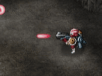

Alex kan drie verschillende typen hoofdwapens inzetten. De speler kan vrij van hoofdwapen wisselen.

GESCHUT
Standaardwapen om projectielen af te schieten op de vijand.
DOELZOEKENDE RAKET
Een projectiel dat vijanden opzoekt en vernietigt.
GRANAAT
Hoewel de voorraad hiervan klein is, is het een krachtig middel om vijanden uit te schakelen in een groter gebied
Er zijn vijf powerniveaus. Elke GP-generator (Geschutspower) die wordt veroverd, verhoogt het niveau met één. Opgelopen schade verlaagt het niveau met één.
●BOM
Alex heeft tevens een bom tot zijn beschikking om aan vijanden in een groter gebied meer schade toe te brengen dan mogelijk is met het geschut. De grootte van het opgeblazen gebied hangt af van het hoofdwapen dat is geïnstalleerd. De bom kan worden gevonden op de kaart.